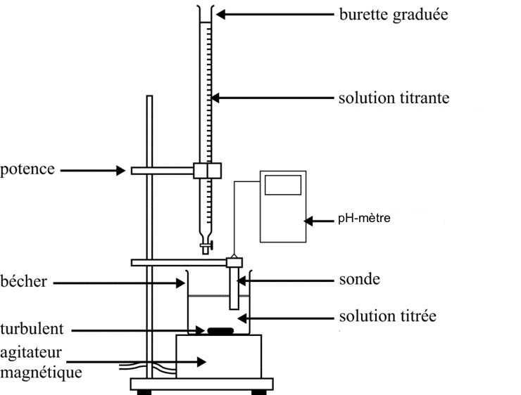

L’objectif de cette séance est de déterminer la masse d’acide sulfamique contenue dans un sachet de détartrant pour cafetière.
Documents
Détartrant pour cafetière
On trouve des détartrant pour se présentant sous forme de poudre. Ils sont conditionnés dans des sachets de 15 ou 20 g.
Certains sont essentiellement constitués d’acide sulfamique $\ce{NH2SO3H (s)}$.
Sur l’étiquette on peut alors lire que le pourcentage massique de l’acide sulfamique dans le détartrant est égal à 98 %.
Acide sulfamique
L’acide sulfamique, également appelé acide sulfamidique, acide aminosulfonique, acide amidosulfonique ou encore acide amidosulfurique, est un composé chimique de formule $\ce{NH2SO3H}$. C’est un solide cristallin blanc et stable, soluble dans l’eau, où il s’hydrolyse lentement. Sa masse molaire vaut $\pu{97 g.mol-1}$.
L’acide sulfamique est un acide que l’on peut considérer fort.
Équivalence d’un titrage
-
L’équivalence, lors d’un titrage, est l’instant du titrage où l’on change de réactif limitant.
-
À l’équivalence, les réactifs ont été introduits dans les proportions stœchiométriques.
Suivi pH_métrique
Lors d’un suivi pH-métrique on mesure le pH de la solution après différents ajouts de titrant. Les volumes de titrant à verser doivent être évalués après un titrage colorimétrique et resserrés le plus possible autour de l’équivalence. Après le saut de pH, il faut poursuivre l’ajout de titrant pendant au moins $\pu{5 mL}$.
Il est souvent nécessaire d’ajouter de l’eau dans la solution contenant le titré afin de pouvoir bien immerger la sonde du pH mètre mais ajouter trop d’eau diminue la précision du titrage car une dilution diminue l’importance du saut de pH.
Indicateur coloré
- Un indicateur coloré est une entité chimique dont les formes acide et basique colorent différemment les solutions.
- Un indicateur coloré s’ajoute en petite quantité : entre 1 et 3 gouttes dans le réactif titré.
- Un indicateur coloré est choisi de telle sorte que sa zone de virage contienne la valeur du pH à l’équivalence.
Quelques indicateurs colorés :
- Hélianthine : Rouge – 3,1 – zone de virage – 4,4 – Jaune
- B.B.T. : Jaune – 6,0 – zone de virage – 7,6 – Bleu
- Phénolphtaléine : Incolore – 8,2 – zone de virage – 10 – Rose fuchsia
Matériel à disposition
- Détartrant solide ;
- Solution d’hydroxyde de sodium fraîchement préparée $\pu{1,0e-1 mol.L-1}$ ;
- Gants et lunettes ;
- Fiole jaugée de $\pu{100 mL}$ ;
- Bécher de $\pu{50 mL}$ ;
- Agitateur magnétique et barreau aimanté ;
- Burette graduée de $\pu{25 mL}$ ;
- pH-mètre Vernier ;
- Hélianthine, BBT, Phénolphtaléine ;
- Pipette jaugée de $\pu{20 mL}$ + Propipette ;
- Eau distillée ;
- Verre à pied (poubelle) ;
- Logiciel Graphical Analysis.
Travail à réaliser
- Indiquer et mettre en œuvre le protocole permettant de préparer $\pu{100 mL}$ d’une solution $S$ contenant une masse $m = \pu{0,50 g}$ de détartrant.
Réponse
- On pèse la masse de solide requise à l’aide d’une balance et on l’introduit dans une fiole jaugée de $\pu{100 mL}$ en veillant à bien récupérer tout le solide présent dans la coupelle à l’aide d’eau distillée.
- On introduit ensuite de l’eau distillée dans la fiole jaugée jusqu’à mi-fiole et on agite de façon à solubiliser tout le solide.
- Une fois tout le solide solubilisé, on complète la solution avec de l’eau distillée, jusqu’au trait de jauge.
- L’acide sulfamique est un acide fort.
Recenser les entités présentes dans la solution $S$.
Réponse
L’acide sulfamique est un acide fort ; lors de son introduction dans l’eau il réagit donc totalement. L’équation de la réaction chimique est alors
$$
\ce{NH2SO3H (aq) + H2O –> NH2SO3- (aq) + H3O+}
$$
Dans la solution $S$ il y a donc $\ce{H2O}$, $\ce{H3O+}$, $\ce{NH2SO3-}$ et d’autres entités considérées spectatrice dans cette expérience.
L’acide sulfamique n’est donc pas présent dans la solution $S$ ; la concentration des ions oxonium $\ce{H3O+}$ est égale à la concentration apportée en acide sulfamique.
- On réalise le titrage de la solution $S$ par une solution de soude (hydroxyde de sodium).
Écrire l’équation de la réaction.
Réponse
$$ \ce{H3O+ + OH- (aq) –> 2 H2O} $$
- Quelles sont les caractéristiques que doit posséder une réaction chimique support d’un titrage ?
Réponse
La réaction chimique support d’un titrage doit posséder les caractéristiques suivantes :
- Elle doit être rapide ;
- Elle doit être unique dans le milieu ;
- Elle doit modéliser une transformation chimique totale.
- On souhaite réaliser un permier titrage basé sur l’utilisation d’un indicateur coloré. Choisir le bon indicateur coloré dans la liste donnée. Justifier la réponse.
Réponse
- À l’équivalence du titrage, les deux réactifs sont limitants ; le milieu ne contient donc que de l’eau. On s’attend donc à ce que le pH à l’équivalence soit égal (ou très proche) de 7.
- On choisit l’indicateur coloré de telle sorte que sa zone de virage contienne le pH à l’équivalence ; on choisit donc ici le BBT.
-
Réaliser le titrage d’un volume $V_a = \pu{20 mL}$ de solution $S$ par la solution de soude.
Noter le volume $V_{bE}$ de soude à verser pour atteindre l’équivalence. -
Réaliser maintenant à nouveau le titre d’un volume $V_a = \pu{20 mL}$ de solution $S$ par la solution de soude mais en effectuant cette fois un suivi pH-métrique. Bien réfléchir à la répartition des volumes de soude à verser.
Déterminer le volume $V_{bE}$ de soude à verser pour atteindre l’équivalence.
Réponse
$V_{bE} = \pu{10,2 mL}$
- L’indication sur l’étiquette du sachet de détartrant est-elle correcte ?
Réponse
-
Si on note $n_a$ la quantité de matière de $\ce{H3O+}$ dans la solution $S$, $n_a = [\ce{H3O+}] V_a$.
-
Si on note $n_{bE}$ la quantité de matière d’ions hydroxyde $\ce{OH-}$ introduite pour atteindre l’équivalence, $n_{bE} = C_b V_{V_{bE}}$
-
L’utilisation d’un tableau d’avancement permet de montrer que $n_a - x_E = 0$ et $n_{bE} - x_E = 0$, soit que $n_a = n_{bE}$ ou $[\ce{H3O+}] V_a = C_b V_{V_{bE}}$.
Finalement $$[\ce{H3O+}] = C_b \dfrac{V_{bE}}{V_a}$$ A.N. $[\ce{H3O+}] = \pu{1,0e-1 mol.L-1} \times \dfrac{\pu{10,2 mL}}{\pu{20 mL}} = \pu{5,1e-2 mol.L-1}$. -
À la question 2. on a souligné que la concentration en ions oxonium dans la solution $S$ est égale à la concentration apportée en acide sulfamique puisque ce dernier est un acide fort.
Si on note $C$ la concentration apportée en acide sulfamique, on a $C = \pu{5,1e-2 mol.L-1}$. -
La quantité de matière d’acide sulfamique apportée dans la solution $S$ est donc égale à $n = C V$, soit $n = \pu{5,1e-2 mol.L-1} \times \pu{100e-3 L} = \pu{5,1e-3 mol}$.
-
La masse d’acide sulfamique apportée dans la solution $S$ est donc égale à $m = n M$, soit $m = \pu{5,1e-3 mol} \times \pu{97 g.mol-1} = \pu{0,49 g}$.
-
$\dfrac{\pu{0,49 g}}{\pu{0,50 g}} \times 100 = \pu{98}$. Cette valeur correspond bien à ce qui est indiqué sur l’étiquette.